Architecture
Delve deeper into the world of architecture with in-depth sights.
Great buildings that move the spirit have always been rare. In every case they are unique, poetic, products of the
heart. Arthur Erickson.
Daniel Kindles
Name
Dborn
Nationality
Occupation
Buildings
Awards
Hassan Fathy
March 23, 1900 Alexandria, Egypt
November 30, 1989 (aged 89) Cairo, Egypt
Architecture
New Qurna
Aga Khan Chairman's Award for Architecture (1980)
Balzan Prize (1980)[1]
Right Livelihood Award (1980)
UIA Gold Medal (1984)
A great architect who adopted the philosophy of constructing architecture with environmentally friendly materials,
and one of his most prominent projects is the “Qurna” village in Luxor, a project for which he received the State
Encouragement Award for Fine Arts and a gold medal. He is the great architect Hassan Fathy, who passed away on this
day, November 30. Since 1989 AD.
He was born in Alexandria Governorate, then moved with his family at the age of 8 to reside in Cairo. He was a
student of the University of Cairo, and later worked as a civil engineer. He was also a He obtained a diploma in
architecture from the Engineer Khanate at Fouad I University, Cairo, in 1926.
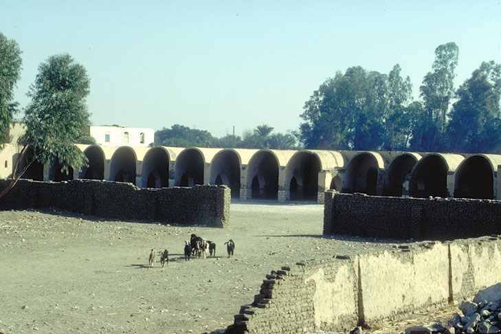
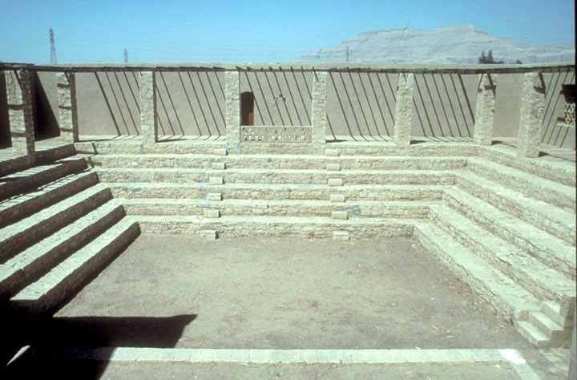
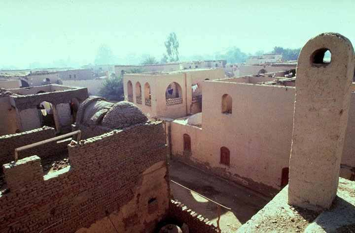
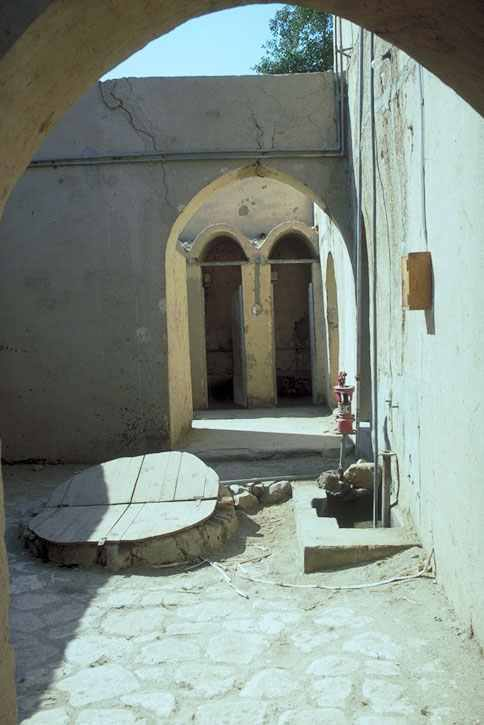
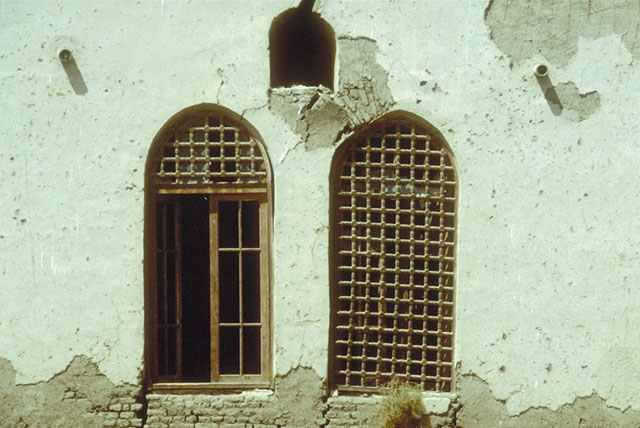
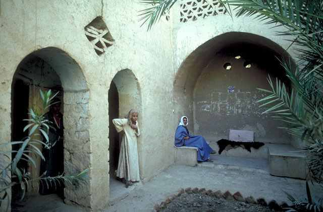
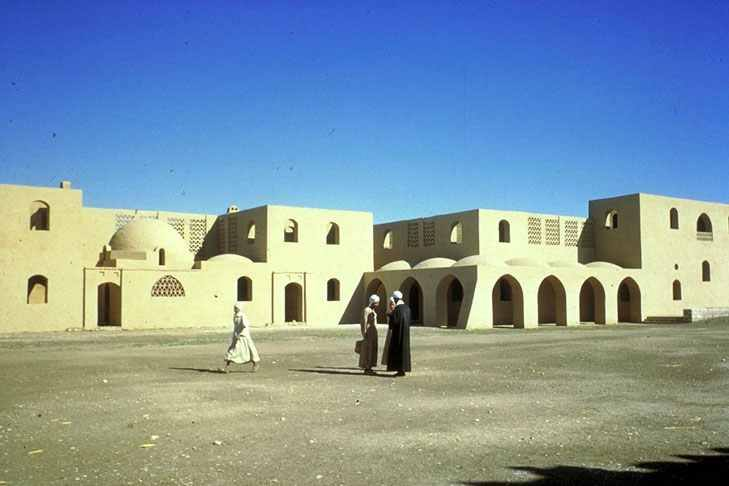
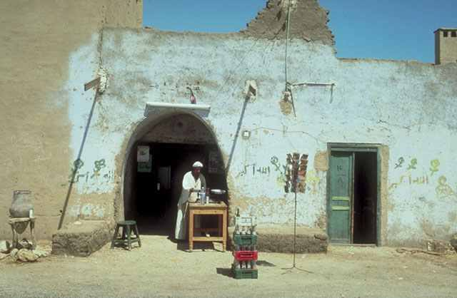
Name
Born
Nationality
Occupation
Buildings
Awards
Ahmed bn Tolon
20 September 835 · (23rd Ramadan, 220 AH) · Baghdad
Azjur al-Turki
Architect
Ahmed bn Tolon mosque
----
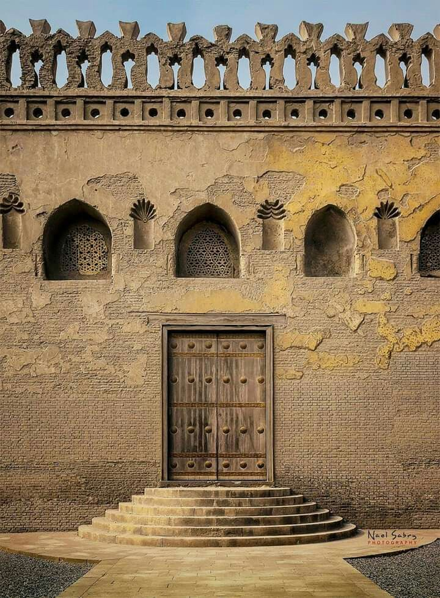
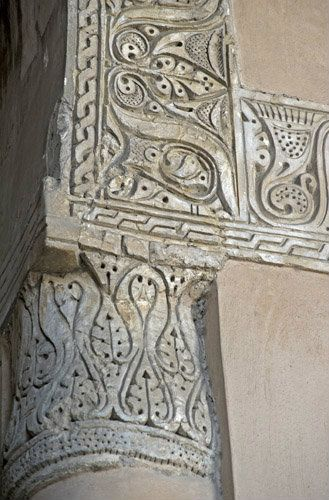
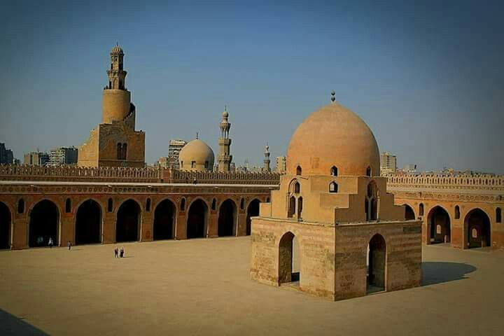
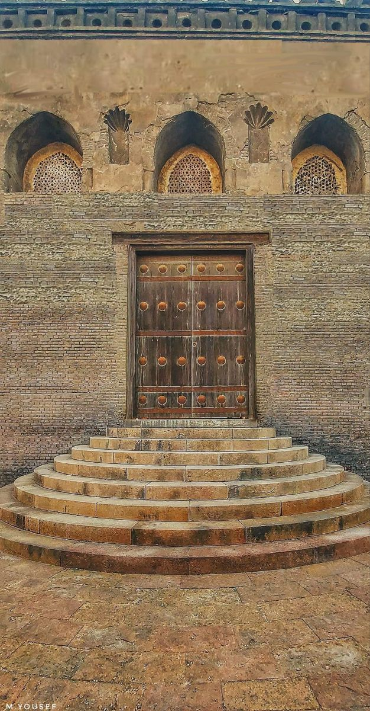
Ahmed abn tolon
Ahmed bn Tolon was a great architect who adopted the philosophy of constructing architecture with environmentally
friendly materials, and one of his most prominent projects is the “Qurna” village in Luxor, a project for which he
received the State Encouragement Award for Fine Arts and a gold medal. He is the great architect Hassan Fathy, who
passed away on this day, November 30. Since 1989 AD.
He was born in Alexandria Governorate, then moved with his family at the age of 8 to reside in Cairo. He was a
student of the University of Cairo, and later worked as a civil engineer. He was also a He obtained a diploma in
architecture from the Engineer Khanate at Fouad I University, Cairo, in 1926.

 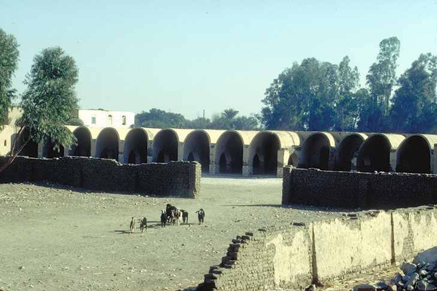
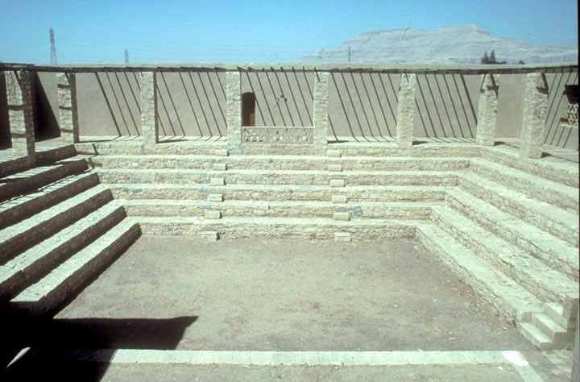
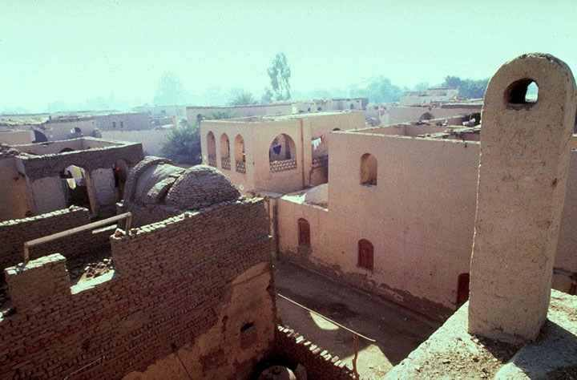
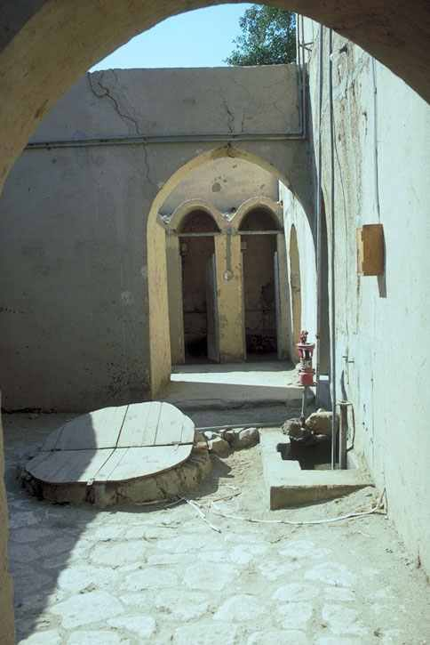
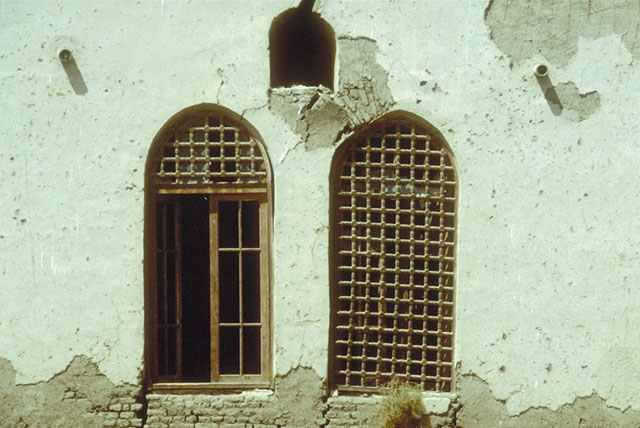
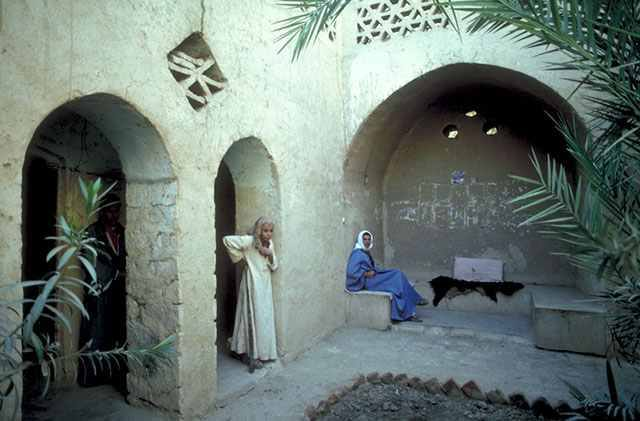
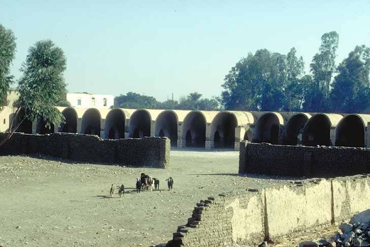
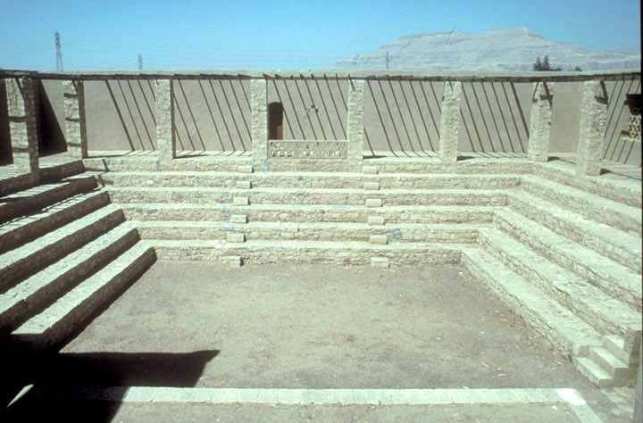
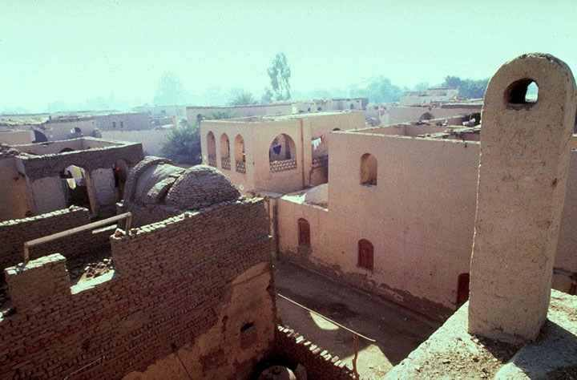
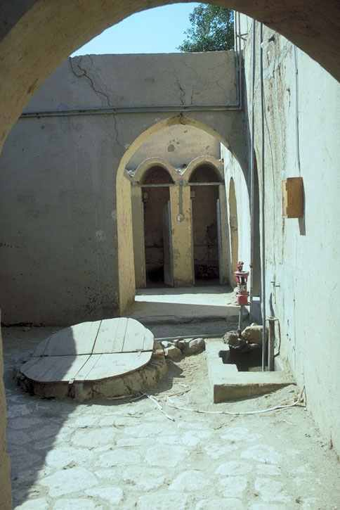
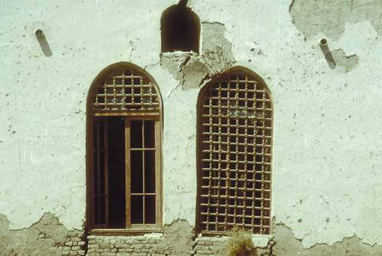
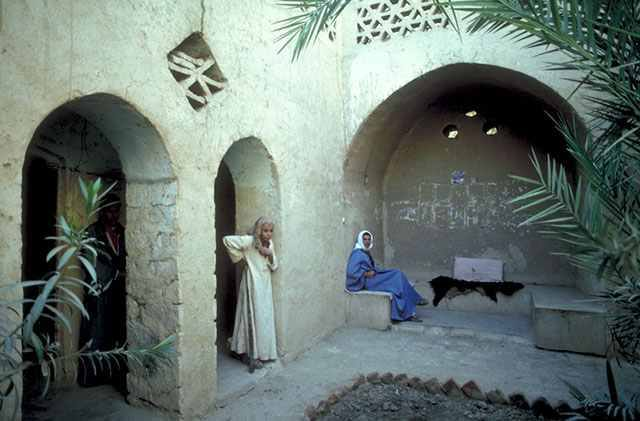
 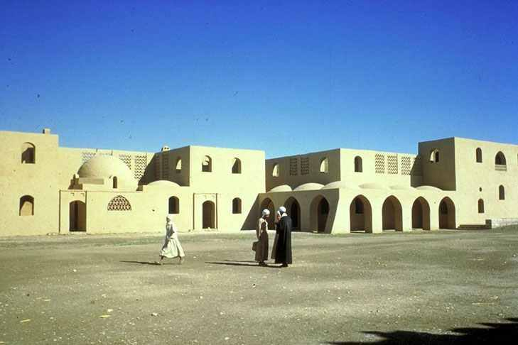
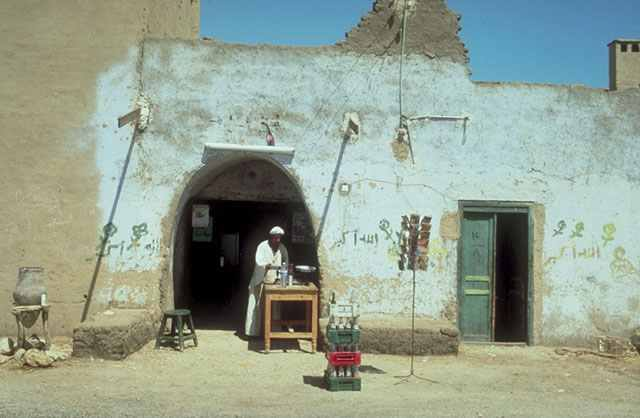
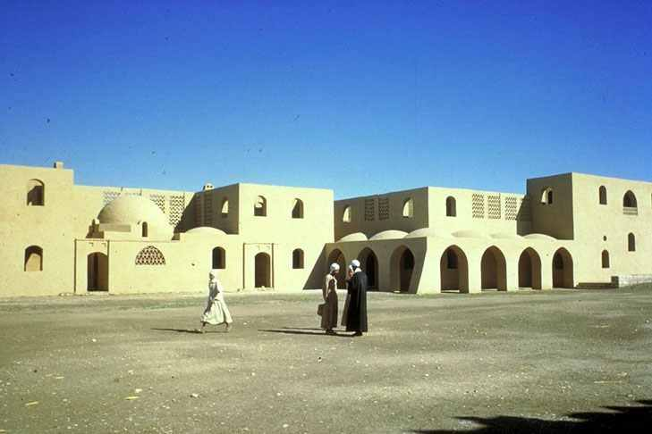
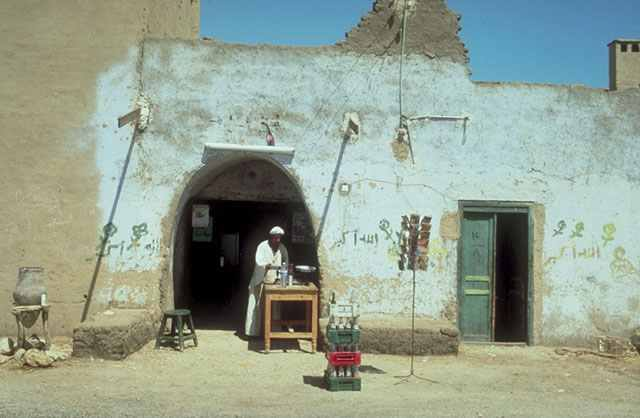